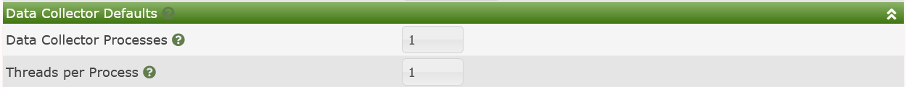

The Poller sub-tab of the Cacti settings are where you go to control many aspects of Data Collection in Cacti, you control various base collection frequencies, communication timeouts, and other settings that impact how Cacti's Data Collection works.
The General Settings are a broad collection of settings into multiple categories. The image below shows Cacti's General Settings sub-section.
Those settings include:
Data Collection Enabled - This is a setting that essentially will override and disable all Cacti Data Collection from all of Cacti's Data Collectors. It's really intended to allow you to put Cacti in maintenance mode with a single click.
SNMP Agent Support Enabled - The SNMP Agent has a measurable amount of overhead on larger systems. Therefore, if you are not using it, you should disable it. However, the SNMP Agent is a marvelous addition to any Cacti system that's participating in a multi-level Operations Framework.
Poller Type - This is where you define either Cacti's built in poller cmd.php, or use the more robust poller spine. You will not see the spine drop-down option unless it has first been installed, and the spine binary path defined from Console > Configuration > Settings > Paths settings sub-tab.
Poller Sync Interval - When creating a Cacti Data Collector this is the default Full Sync interval it will use. In the current Cacti design, a Full Sync should only be required when attempting to replicate local authentication or authorization data to Remote Data Collectors, of if you have made changes that would otherwise impact the behavior of a Remote Data Collector when it was offline.
Poller Interval - This setting must align with the highest frequency Data Source Profile polling interval.
NOTE: This only applies to the Data Source Profiles that are in use. If you only plan on polling every minute and therefore only using the
1 MinuteData Source Profile, then your Poller Interval should be1 Minuteas well.
Cron/Daemon Interval - This is the frequency at which either the Cacti daemon (cactid.php), or the systems crontab/task-manager should relaunch every Data Collectors Poller process.
Balance Process Load - This setting will sort the devices such that each concurrent Cacti process is polling the same number of Data Sources. Otherwise, Cacti will simply order the hosts by their device ids.
Debug Output Width - This is a diagnostic settings that you would only enable from time to time if you wish to check if the output from your Data Collector scripts exceeded the output width in the various Poller tables. Since checking this have a very negative impact on polling performance, it's disabled by default.
Disable Decreasing OID Check - This setting is for performing Data Query Re-index activities for tables whose OID's are not structured in an orderly way where the suffix for the OID increases in a known way. Though, in most cases enabling this setting will not be harmless. There may be some cases where it would slow the Re-index process.
Remote Agent Timeout - When Cacti either needs information from a Data Collector, like ping latency from the collector to one of the Devices it's monitoring, or when a Remote Data Collector needs information from the main Cacti server, this is the timeout for receiving a handshake from that server. It's use to keep the Website from locking up in the case a Data Collector is not responding due to being down.
SNMP Bulkwalk Fetch Size - This controls how many OID's are returned per UDP turn when obtaining snmpwalk data from an SNMP enabled Device.
NOTE: This only works with SNMP v2 and v3. It is not supported on older SNMP v1 Devices.
SNMP Get OID Limit - The default maximum number of SNMP Get OIDs to issue per snmpget request. For Devices, this setting is controlled at the Device level. You should only use this setting when using Cacti's SNMP API natively in your scripts and Plugins.
Disable Resource Cache Replication - By default Cacti will continually replicate it's Website content with it's Remote Data Collectors. So, essentially, they are self upgradable. However there are some cases where customers wish to upgrade the Central system before allowing the remotes to self upgrade. In those cases, you would enable this feature.
The settings below limit how long Cacti background processes will be allowed to run before timing out and being killed the system and notifying the Cacti administrator. These background timeouts are required to keep Cacti performing a peak performance by not allowing certain tasks to re-spawn while they are still running causing system overload. Below is the image of those settings.

Those settings include:
Report Generation Timeout - Some reports can take several minutes to complete. Adjust accordingly based upon your system size and the number of reports across all users.
Data Source Statistics Timeout - Depending on the size of your Cacti system, some Data Source Statistics tasks can take quite a bit of time. This setting is for the periodic collection and not the Daily process.
Background Commands Timeout - Cacti will schedule some commands to be run offline during normal operations. This timeout affects those commands. Some activities include some aspects of re-indexing, removing old RRDfiles, etc.
Maintenance Background Generation Timeout - Cacti performs daily maintenance at midnight every day. This maintenance can include: rotating logs, purging old logs, calculating Data Source statistics, etc. This setting controls it maximum allowed runtime.
Spikekill Background Generation Timeout - If you are using Cacti's prophylactic spike-killer process on your Data Queries, this will control it's maximum allowed run-time.
Cacti's Data Collectors include both concurrent process and thread settings. They are maintained at the Data Collector level due to the fact that not all Data Collectors are created equally. You may have one Data Collector that's collecting data from 1,000 hosts, and another that is collecting from 10. Maybe one is a Raspberry Pi and the other a two socket EPYC chip. You would not want the same settings for each.
These settings are only the defaults, when you fist create a Data Collector, once you save them, the setting stays with the individual Data Collector. Below, you can see an image of those settings.

Those settings include:
Data Collector Processes - The default number of concurrent processes the Data Collector will spawn every cron or daemon cycle.
Threads per Process - The default number of spine threads per Concurrent Poller Process above.
NOTE: The Thread setting only applies if you are using the
spinepoller. It does not apply to thecmd.phppoller.
These settings are Global Spine poller settings. They apply to all Data Collectors. An image of these settings can be seen below:

Those settings include:
Invalid Data Logging - By default spine will only log the number of errors it experienced for a Device. If you wish more granularity you can change this settings to either Summary or Detailed logging.
Number of PHP Script Servers - Another level of Spine parallelism is it's ability to create a pool of memory resident PHP interpreters for running PHP scripts, making spine very powerful. Every concurrent process will have this many memory resident PHP interpreters pooled fro running scripts.
Script and Script Server Timeout Value - This is the timeout to stop run-on script from blocking poller performance. If a script exceeds this timeout, it will generate a log message.
Copyright (c) 2004-2024 The Cacti Group